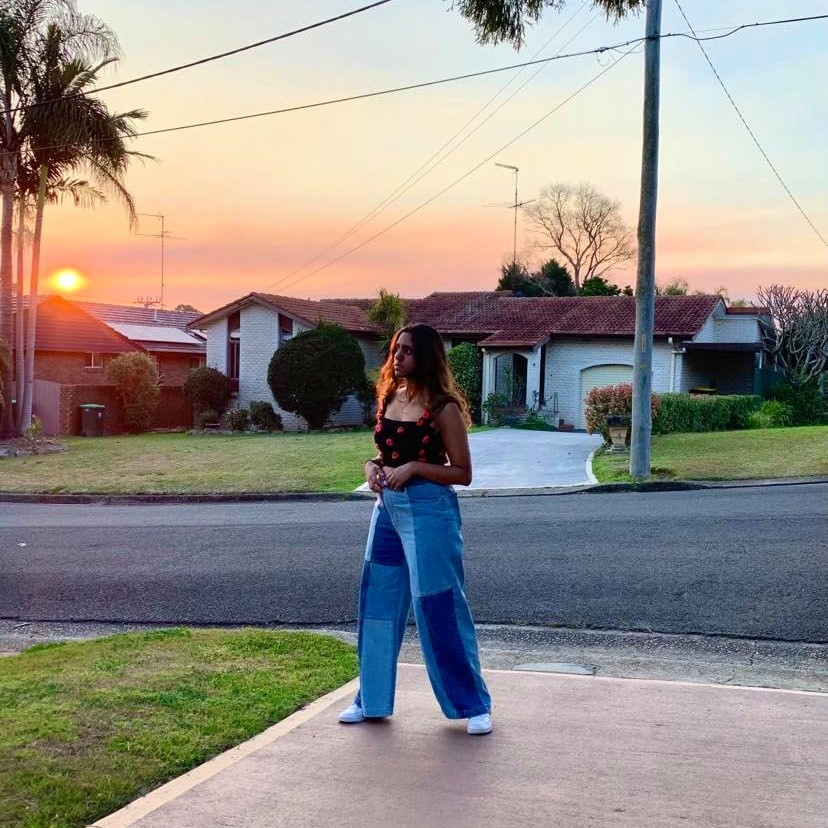

This Two-toned sweater in navy and maroon
is one of my favourite works, made for my sister's birthday. Earlier this year I designed and made a similar jumper
with the colours black and wisteria but made a few modificiations based on what I learnt the first time. I still love the way this
turned out and it has to be one of my favourite works.
The Fiery Flower top is one of my most recent makes,
combining both my knitting and crochet abilities. The photo below was actually taken on my birthday from the view at the front of my house. I just love how everything here turned out.

Inspired by the instagram account @shopifeelsocool,
I really wanted to make a patchwork cardigan with a warm theme. This is my work in progress because I haven't finished it yet.
All my winter projects are currently on pause due to being in lockdown for most of winter but I'm really excited for the final result.